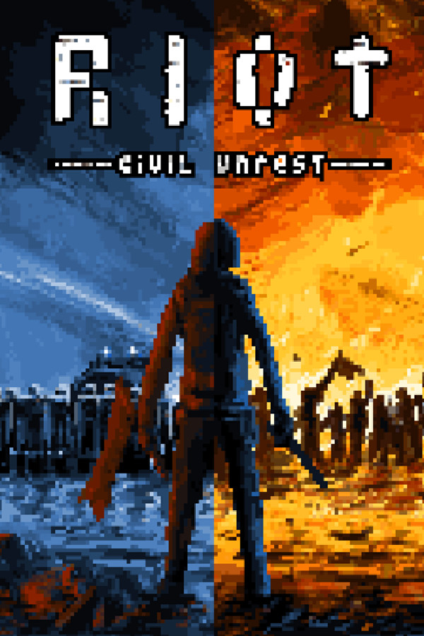

|  | |
| Tempo de jogo | Não Jogado |
| Última Atividade | Nunca |
| Adicionado | 18/01/2025 16:26:54 |
| Modificado | 19/01/2025 2:09:48 |
| Status de Conclusão | Not Played |
| Biblioteca | Gog |
| Fonte | GOG |
| Plataforma | PC (Windows) |
| Data de Lançamento | 05/12/2017 |
| Pontuação da Comunidade | 66 |
| Avaliação da crítica | 55 |
| Pontuação do Usuário | |
| Gênero | Modern Simulation Strategy |
| Desenvolvedor | Leonard Menchiari, IV Productions |
| Editor | Merge Games |
| Funções | Compartilhamento Em Família Compat. Total Com Controle Conquistas Coop. Tela Dividida/Compart. Cooperativo Jxj Jxj Tela Dividida/Compart. Multijogador Remote Play Together Tela Dividida/Compartilhada Um Jogador |
| Links | Central da comunidade Discussões Guias Notícias Página na loja PCGamingWiki Conquistas |
| Tag | 2D Action Crime Early Access Historical Indie Multiplayer Pixel Graphics Political Political Sim RTS Simulation Singleplayer Strategy Violent |